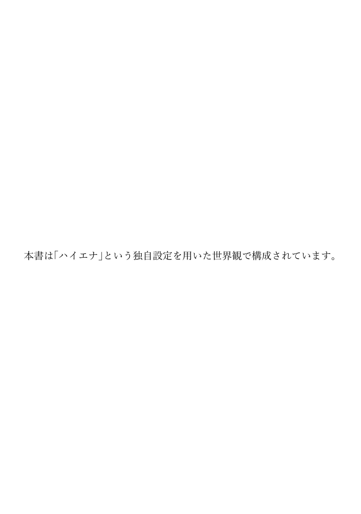
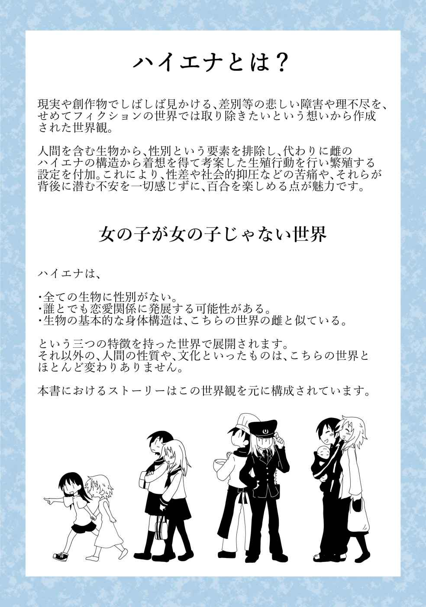

| honey-trap: 百人切りモテ子がストーカーに落とされる百合な話 (ゆりかもねノベルス) | |
| 嗚呼蛙 | |
| yurikamonesyuppan (2019) | |


ザザザアと、まるでザラメでも零したような物音で、
エアコンの効いた車の後部座席、蓮の目には、今の今まで自分に覆いかぶさっていた人間が、車から引きずり出されて羽交い締めにされる様が映る。やはり先生の言う通り、学校の駐車場でコトに及んだのはマズかったかと、蓮は先生を拘束している人物へと焦点を合わせた。
ポメラニアンのシッポのような短いポニーテールに、自分と同じ校章の入ったシャツ、どことなく顔に見覚えがあるので、おそらく一年生だろう。今付き合っている人間の内の誰かではない。
てっきり嫉妬に駆られた交際相手の誰かが、怒りに任せてこんな事をしでかしたのだろうと、直感的にそう思っていた蓮は、内心、はて？ と首を捻る。一体どうして、知り合いでもない同級生が、車の窓を叩き割ってまで、お楽しみの邪魔をするのか。もしや、ストーカー？
後部座席に横になったまま、蓮がそこまで考えたとき、車の外でストーカーが叫んだ。
「君！ 早く......！ 逃げて、警察......！」
ストーカーは顔を真っ赤にして、羽交い締めにした教師をずるずる引きずり、車から遠ざけたが、蓮はその言葉に、思わず噴き出してしまう。ケラケラ笑いだした蓮を見て、ストーカーは目を白黒とさせた。
「あははは、なっちゃん、強姦魔と間違われてやんのー、だっせー、ははは」
指を指して大笑いする蓮の様子から、どうやら自分がとんでもない誤解をしてしまったらしいことを悟ったストーカーは、教師の拘束を解き、小さく、すみません、と呟いた。教師は服の乱れを整え、暴力はいけない、などと説教を始めたが、ストーカーがくるりと首を傾けて、でも生徒に手を出すのは犯罪では？ と言った瞬間に、どうかこのことは内密に、なんて手の平を返したものだから、蓮は全開になったままのシャツのボタンをとめることもできず、車の中でさらに笑い転げてしまった。
◆ ◆ ◆ ◆ ◆
そして、その出来事の翌日から、ストーカーは、本当にストーカーのようになった。
蓮がふと顔を上げた拍子なんかに、視界の端に姿が映ることが多くなったのだ。時々、気がつくと、視界の端に立っている。だけど、ただそれだけで、こちらを見つめるでも、写真や動画を撮るでもない。鈍い人間なら視界に入っていることも気づかない程度の変化だろう。
しかし生憎と、蓮は自分に送られる視線に敏感だった。その視線に含まれる感情が、好意なのか、敵意なのか、好意なら食べてみてもよさそうか、不味そうな場合や、敵意なら、誰にどう排除させるか、それを考えなければいけないからだ。
有り体に言えば、蓮は人並み外れて性欲が旺盛で、そしてそれを十二分に満たせるだけの性的魅力を持った人間だったのだ。
鳩尾のあたりまで伸ばしたさらさらの髪、長いまつ毛、全身のどこも色素が薄く、肌は透き通るようで、翼を背負わせたら天使に見紛うであろうことが容易に想像できる容姿。それでいて表情や仕草には、通常、学生は持ち合わせそうもない、悪魔のような妖艶さが含まれている。
そのため、学校という場所は、蓮にとっては同年代の人間を好きなだけ食べられる、ビュッフェのようなものだった。
美味しい環境ではあるが、ひとつ問題なのは、美味くもないのに、口に飛び込んで来ようとする輩が後を絶たないこと。食べてみたら美味いということもなくはないが、物影からじっとこちらの様子を伺ってくるタイプの人間は、食べた後が面倒である場合が多い。手を付けないに越したことはない。早めに誰かをけしかけて、脅しのひとつもかけさせた方が良いだろう。蓮は冷静に排除の方法を模索する。
しかしその一方、出会いのインパクトのせいか、どうにもこのストーカーに食指を動かされる自分もいた。
「なぁ、今、あっちの廊下のところに、一組の
昼休みの教室。昼食を終えてクラスメイトと雑談していた蓮は、声を潜めてそう尋ねた。言われて廊下へ視線を送ったショートボブヘアのクラスメイトが、どれ？ と聞き返したので、身長高めで短いポニテのヤツ、と特徴を伝える。
「見てはないけど......、なんであんなトコに突っ立ってるのか謎だね......。何？ またストーカー？」
「びみょーなんだよなぁ、ちょっと前からチョロチョロしてんだけど、いつもただ立ってるだけだからさぁ......。
蓮に聞かれて、亜美はもう一度、波多野を見る。壁によりかかり、俯いて腕を組んだ波多野は、時折頭を傾けたりして、考え事でもしているように見えた。立っているのが、難解な絵画の前などであれば、特に不自然さを感じることもないのだろうが、学校の昼休みに自分のクラスでもない教室の前という点が、バリバリの違和感を放っている。
亜美は蓮の方へ視線を戻し、
「うーん、知的な雰囲気アピール......？ でも蓮より頭良かったら私も名前くらい知ってるか......。顔もまぁフツーだし......。うーん、視界に入りたい、とか？」
苦しい推論を述べ、弁当箱を袋にしまった。
それから、ずいと蓮に顔を近づけて、気になるなら私がつきまとうのヤメロって言ってこようか？ と口角を持ち上げる。蓮は、うーん、と息を吐いて指先で唇をなぞり、まだ気のせいってこともあるから、と亜美の提案を断った。
「顔はちょっと好みだしな」
「ハア!?
アンタ、もう何十人もセフレいるくせに、あんなのにまで手ぇ出す気なの!?
」
「だって結構カワイイじゃん。なんかサムライって感じでさぁ」
「サムライにタコ足かましたら、斬り捨て御免じゃない!?
」
ニヤニヤといやらしい笑みを浮かべる蓮に、亜美は食って掛かる。
「ねぇ、マジでそのうち刺されるよ？ 同時に大勢と付き合うとかフツーに不潔だし、軽蔑モノでしょ？ アンタに相手取られたって恨んでるヤツもいるし、もういい加減、一人に絞ろうとか思わないわけ？」
「えー......、ずっと同じ相手とか飽きるじゃん。アレの日はヤれないしさぁ。それにヤバいヤツはピンとくるし、大丈夫、大丈夫。アイツのコトだってたぶん気のせいだろ、ホラ、もういなくなったし」
じろりと自分を睨んでくる亜美に、へらへらと笑いかけ、蓮は先程まで波多野が立っていた場所を指差した。それと同時に予鈴が鳴り、昼休みの終わりを告げる。亜美は不満気に蓮をじっとり見てから腰を上げ、自分の席へと戻って行く。蓮はその様子を見送ることもなく、窓の外を眺めて、波多野のことを考えた。夏の眩しい色彩に目が痛む。
亜美には、気のせいだろうと言いはしたが、蓮には経験から判然とした確信があった。きっと波多野は、強く強く、自分を求めている。蓮が視界の隅に波多野を捉えるとき、波多野はいつも蓮を見てはいないが、蓮ははっきりと視線を感じていた。身体に熱した刃を突き立てられる様な視線だ。これが恋に落ちた者の視線でなくてなんだというのか。
通常であれば、ろくに話もしたことがない相手がこんな視線を送ってきた場合、不気味さを感じたり、面倒に思ったりするのだが、困ったことに、波多野のそれには、蓮の心も身体も、不快さを感じてはいなかった。それほど、出会ったときの衝撃が強かったのだろう。悪い癖だと思うものの、蓮は正直、もう波多野を一口に食べてしまいたくなっていた。
波多野は、あの武士のような髪を下ろせば、もっと可愛いだろう。組み敷いて弄り回したら、その髪を振り乱して悶えるに違いない。もう少し様子を見て、面倒そうでなければ誘ってみよう。扱いやすいようなら抱かれてやっても良いかもしれない。
ふつふつと湧く淫らな想像が、蓮の頭をいっぱいに満たしていく。
これは一度、手近な相手で発散させた方が良いだろう。蓮は授業中にも関わらず、机の中のスマホから、大勢いる相手の一人に誘いのメッセージを送信した。
◆ ◆ ◆ ◆ ◆
午後二つ目の授業をサボり、ＨＲをサボった蓮は、セミの声がよく響く、無人の教室へと戻って来た。
ボディーシートで汗は拭き取ってあるものの、まだ日は高く照っていて、校内はどこもかしこも蒸し暑い。ただ教室へ移動してきただけでも、新しく汗が滲んでくる気がするほどの熱気だ。
少し涼もうと、紺色のスクールバッグから取り出した制汗スプレーを、シャツの裾から肌に吹きかけると、心地よい清涼感の中、遠くからかすかに吹奏楽部の演奏が聞こえてくる。その音で、テスト期間の終了と共に、部活動が再開されたことを思い出した蓮は、久しぶりに部室に顔を出しておこうと、第三音楽室へ足を運ぶことにした。
第三音楽室は、音楽室とは名ばかりのただの空き教室で、放課後は軽音楽部の部室となっていた。
蓮は部活動に打ち込むタイプではないが、軽音学部は、運動部のように毎日体を酷使することもなく、校内での人気を獲得できるとあって、日頃から顔を出すようにしていたのだ。元々それなりの歌唱力を持つ蓮は、ほどほどの練習で、楽器を覚えることもなく、一年生バンドのヴォーカルに収まり、文化祭でステージに立つことが決まっていた。それが上手くいけば、同級生だけでなく上級生も、向こうからネギを背負って、交際を求めにやってくるに違いない。ファンクラブなんかができれば、面倒な輩の排除も任せることができるだろう。蓮にとって軽音楽部は、少ない労力でさまざまなメリットを享受できる、実に都合の良い部活動だった。
近い将来のビジョンを描きつつ、蓮は鼻歌交じりに音楽室のドアを開ける。きっと何人かが雑談でもしているだろうと思っていたが、予想に反し、室内にいた人間は一人だけだった。ドラムセットが置かれている他は、椅子も机も数組しかない教室で、サイドに髪を束ねたセミロングの同級生が、ギターのチューニングをしていた手を止め、顔を上げた。
「あれー？
「あぁ、えっと......、テスト終わったし金曜日だから、カラオケ行こうって、いって、行っちゃった......」
「マジで？ 倫子は行かなかったの？」
「私は、まだへたっぴだから......」
倫子は恥ずかしげに顔を伏せ、視線を床へ落とした。ふーんと鼻を鳴らした蓮は、バッグを壁際に置き、手近にあった椅子を引きずっていって、倫子の隣で座面に跨り、背もたれに腕を乗せた姿勢で座る。
「私のこと待ってた？」
自分の腕に頭を乗せ、倫子の顔を見つめた蓮が、ニタニタと口元を歪めて尋ねた。倫子は微動だにせず、また、返事もしなかったが、みるみるうちに首回りから上が紅くに染まっていったので、言葉にされなくても答えは明白だった。
「にひひ、倫子、真っ赤になってるよ～、わっかりやす～、カワイイなぁ、ひひひ」
「うぅ......、新名さんが変なこと言うから......、それに待ってたわけじゃ......、新名さん、あんまり部室来ないし......」
「でも会いたかった、でしょ？ 顔に書いてあるよ」
指の背で、ついと、倫子の頬を撫ぜる。伝わる体温の高さに気を良くした蓮は、ついさっき発散させたばかりの衝動が、再び胸の中で膨らんできているのを感じた。
倫子は現在交際中の相手の中でも、一、二を争うほど奥手な性格だった。クラスが離れているために姿を見かける機会も少なく、こうして顔を合わせるのもずいぶん久しぶりだ。そんな状況もあって、蓮は倫子との距離をまだあまり詰められていなかった。何をしようとしても、校内では大抵、拒絶されてしまい、まだ思うように楽しめる関係ではない。もちろんそれが可愛くて付き合っているのだが、学校の外にも相手のいる蓮としては、同じ学校の生徒や教師と付き合うのなら、日中の校内でも事に及べるというメリットを享受したいという気持ちが大きかった。当然、倫子にもそれを求めている。
久しぶりに顔を合わせた今なら、少し押せば、そういう関係に進めるかもしれない。そう考えた蓮は、まだ赤い倫子の耳に唇を寄せる。
「なぁ、今日はもう誰も来ないだろうし、ちょっとだけイチャイチャしねぇ？」
「は？ え？ そ、それはちょっと......。誰か来るかもしれないし......」
「えー？ いいじゃん、ちょ～っと抱っこして、かる～くお触りするだけにするからさ......」
ふるふると首を振る倫子に椅子ごと詰め寄り、するりと肩に腕を回した。しかし、ガチャリとドアノブを回す音に、倫子が飛び上がってしまったため、蓮の腕は虚しく空気を抱く。良いところを邪魔された恨みを込めてドアを睨むと、そこには、例のストーカー、もとい、波多野が立っていた。
「あ......、にゅ、入部希望、ですか？」
「いや、違うけど......」
ドアを開け放ったまま、何も言わずに突っ立っている波多野に、沈黙に耐えかねた倫子が声をかける。だがそれは、短く否定され、音楽室には再び沈黙が流れた。波多野はじっと、本でも読んでいるような表情で、まっすぐに蓮を見て、つかつかとその正面まで歩み寄ってくる。倫子もいるというのに、この場で愛の告白なんて、ストーカーのくせに大胆なヤツだ。そんなことを考えながら、蓮は波多野を見上げた。
愉快そうにニヤニヤと笑う蓮に、波多野は予想外の言葉を投げかける。
「えっと......、名前、なんだっけ？」
カチンときた蓮は、一瞬だけ眉を寄せた。
上級生ならともかく、同級生で自分の名前を知らない人間はいない。そう思っていた蓮は、波多野の言葉に少々プライドを傷つけられた。
「新名だけど......」
「新名さん......。私、波多野」
知ってる。
蓮は吐き出しかけた言葉を飲み込んで、平静を装い、用件を聞こうとしたが、波多野の方が一拍早かった。
「ここ、軽音部？」
「は？ 見ての通りだけど？ ドラムあるし、ギターもいるじゃん」
「パートは？」
「あ？ ヴォーカルだけどなに？」
ペースを握られ、意図不明の質問を浴びせられた蓮は、だんだんと不機嫌になっていく。波多野の方は反対に、目を煌めかせだし、口元も緩んできていた。
不可解な行動、表情に、蓮は不快感を濃くする。しかし残念なことに、同時に湧いてきた、笑うと可愛いな、という気持ちの方が、不快感よりも濃厚だった。そのため蓮は、怒って波多野を追い返すことができず、そんな自分の性分をちょっぴり恨めしく思った。
一方、蓮の心情など知らない波多野は、部屋の隅の空いている椅子まで歩いて行き、ちょこんと、そこにお行儀よく腰かける。
「練習見学させて、歌聞きたいから」
言われた蓮と倫子は顔を見合わせた。蓮の視線の先では、倫子が困ったような顔をしている。倫子は春からギターを始めたばかりで、まだ自分の演奏に自信がない。人見知りな性格も相まって、相当に戸惑っている様子だった。
「歌だけでいい？」
伴奏は無理だと判断した蓮が、椅子をどけて立ち上がった。赤べこのようにウンウンと頷く波多野に向き直ると、蓮は大きく息を吸い込んで、音楽の授業で歌わされる合唱曲を歌いだす。室内を満たすには十分な声量で、身体からメロディを響かせると、波多野は歌声の波に身を委ねるように、静かに目を閉じた。倫子も視界の端で、そっと椅子に腰をおろし、ぎゅっとギターを抱きしめている。
蓮はそんな二人の様子に、ベッドで身を任せてくる姿を想起させられ、高揚感を覚えた。これまでも蓮の歌声に感心する者はいたが、それはもっぱらカラオケの一曲目、歌い出しと歌い終りに、わっと上がる歓声と賞賛で表されていたので、こんな風に、聞き入るような真似をされるのは初めてのことだった。少しだけ照れくさくなった蓮は、一番を歌い終えると、ぶっきらぼうに、満足？ と腕を組み、ドカっと乱暴に椅子に座った。
大きく頷いた波多野は、蓮の正面まで歩いてくると、おもむろに跪き、
「私、君に曲を書く。だから、歌ってくれない？」
そう言って、またまっすぐに蓮を見つめた。
変わった求愛だな、と、ときめいた蓮だったが、間近で注視した波多野の目は、新しいおもちゃを前にした子供のようであったため、すぐにその言葉が求愛のそれではなく、言葉通りの意味であることに気付いた。ゆっくり、ぐらぐらと、はらわたが湯立ちだす。
リクエスト通りに歌まで歌ってやったというのに、波多野のまなざしには、恋心のこの字も含まれていなかったのだ。にもかかわらず、勘違いをし、一瞬、ほんのちょっぴりだけとはいえ、ときめいてしまった自分が恥ずかしかった。そしてなによりも、自分になびいていない波多野を腹立たしく思った。
この不愉快なヤツをどうしてくれようか。
蓮がその答えを出すより早く、それまで黙って二人の様子を見ていた倫子が、ギターを抱きしめたまま立ち上り、ダメ、と小さく、絞り出すようにして口を挟んできた。
「新名さんは、一年生のヴォーカルだから、だからダメです......！」
「......部活を辞めてほしいわけじゃないけど」
「それでもダメです......！」
不思議そうな顔をした波多野に、倫子がキッと敵意を含んだ目を向けていた。
ただ単にヴォーカルの勧誘をしているだけの波多野を、倫子は恋のライバルと認識した様子で、脚を震わせながらも精一杯に威嚇している。これなら波多野への対応は、倫子に任せてしまった方が楽かもしれない。だが、蓮がそう思ったのもつかの間、倫子は、蓮が何も言わないことに不安を覚え、縋るような視線を向けてくる。元々内気で大人しい性格の倫子には、黙って睨むのが最大限の攻撃だったらしい。
仕方なしに蓮は、もうさっさと波多野を追い払ってしまおうと、率直に気持ちを述べることにした。
「私、ヤれない相手には興味ないから」
「ヤれない？」
「セックスのことに決まってんだろ」
首をかしげる波多野の顔を、蓮はため息交じりに睨み付ける。
セックスというワードに、なにか反応があるかと、ちょっぴり期待を込めて言ってみた蓮だったが、波多野はまったく動じず、焦る、照れる、恥ずかしがる、といった、面白いリアクションは返ってこなかった。その代わり波多野は、ますます首を傾け、しばらくうんうんと唸り考えて、
「......それは、ヤれたら歌うって意味？ それとも、
「え？ なに？ その気あんの？」 と目を煌めかせ、
「奈美恵先生って、世界史の......？」 倫子は肺から空気が抜けたような呟きを漏らす。
ニマリ、口元が緩んだのも束の間、蓮は倫子の反応に不都合なモノを感じ、とっさにそちらに目をやると、倫子は今にも泣き出しそうな顔で蓮を見ていた。
蓮は交際する人間には、必ず前もって、他にも付き合っている相手が大勢いるということを告げている。そのため倫子は、波多野の短い言葉から、蓮が教師とも関係を持っているということを察し、その上、蓮の反応から、蓮が自分の目の前で、波多野を口説こうとしている気配までも感じてしまっていた。
もちろん倫子は、蓮がそういう人間であることを承知で付き合っていたが、それは他の相手について何も知らないためにできていたことだった。知らなければ、蓮が誰と何をしているとしても具体的なイメージが湧かない。だからこそ、モヤのような感情を胸の隅に留め、甘い時間に酔えもしたのだ。だが明確な嫉妬の対象を持ってしまった今、胸の隅のモヤは、濃く、鋭く尖り、倫子の身の内を深く深く突き刺していた。
その痛みに倫子は、せめて一言だけでもフォローを入れてほしいと、祈るような気持ちで蓮を見つめる。しかし蓮は、溜息をひとつついただけで、慰めを口にしはしない。隅に置いてあったバッグを拾い上げると、落ち着いたら話そう、とだけ言って、さっさと音楽室を出て行ってしまった。倫子はその後姿を呆然と見送る。さらに事の発端となった波多野も、困ったように頭を掻くと、黙って蓮の後を追いかけて行ってしまった。
ひとり音楽室に残された倫子は、胸の内で膨らみ続ける黒い想いを抱えたまま、力なく床にへたり込む。俯き、ギターを床に寝かせると、水滴がぱたぱたと、スカートにいくつか円系の染みを作った。その瞬間から、堰を切ったように溢れてくる涙を止めようと、ぎゅっと袖口で両目を抑えたものの、生地は水分を吸い取るだけで、止めてくれる気はカケラもないらしい。
いつかこうなることはわかっていた。そう自分に言い聞かせてみても涙は止まらず、悲しみがキリキリと、喉を締め上げてくるのを、ただ受け入れることしかできなかった。
苦し紛れにぎゅうぎゅう膝を抱えて泣いていると、不意に、音楽室のドアが開く。ひょっとして蓮が戻ってきてくれたのかと、淡い期待に顔を上げると、そこにいたのは蓮ではなく、ベースを背負った蓮のクラスメイトの亜美だった。
「え......、ちょっと、何？ どうしたの？」
亜美は倫子の顔を見るなり、ぎょっとして声をかけた。倫子は慌てて目元を隠し、なんでもないと首を振ったが、涙を含んだ水っぽい声が、なんでもなくはないことを如実に物語っていた。亜美は動揺しつつも、倫子の隣に座り、落ち着かせようと背中を撫でてやる。そうして辛抱強く事情を聞くと、やがて倫子は観念したように、ぽろぽろと、涙と一緒に言葉を零しだす。
「新名さんが......、奈美恵先生と......、波多野さんって子が来て、それで......」
なんとか口を開くことはできたものの、倫子が発した言葉は断片的だった。頭の中が、強盗に荒らされた部屋のように、ぐちゃぐちゃになっていて、何から話したら良いのかがわからなかったのだ。
そしてその断片さえ、亜美の耳には届かなかった。新名、と蓮の名前が出た瞬間に、ぶわ、と全身から頭へと上った血液が、亜美の五感を全て遮断していた。倫子は懸命に説明を続けているが、今や亜美の視界は真っ暗で、耳には倫子の声の代わりに、甲高い耳鳴りがサイレンのように響く。さらには、胸の真ん中を、蛇でものたうっているような、ざわめきと圧迫感が満たしてせり上がり、本来であれば、慰めや、励ましの言葉を吐くべき口から、力のない、乾いた笑いが漏れ出していった。
「はは......、アイツ......、アンタにも手出してたんだ......」
にも。
倫子がはっとして亜美を見る。亜美は、真っ赤な顔で奥歯を噛み締め、懸命に涙を堪えていた。
◆ ◆ ◆ ◆ ◆
倫子とは、もうダメだろう。
音楽室を出た蓮は、はぁ、と長く息を吐いて、昇降口へと向かう。できるだけ後腐れのない終わらせ方をしなければと、いくつか別れの言葉を思い描いては、それと同じ数だけ、ため息がこぼれた。
奈美恵先生に続き、倫子との関係にも波を立てられた蓮は、波多野のことを、疫病神のような存在なのかもしれないと考え始めていた。波多野自身からは危険な臭いは感じないが、仮に疫病神であったとすれば、これ以上関わったら、他にもダメになる相手が出てくるかもしれない。そう思うと、後ろから小走りに自分へ駆け寄ってくる足音にさえ、苛立ちを覚えた。
「ついて来てんじゃねーよ！」
蓮は振り返り、すぐ後ろまで走ってきた波多野を睨みつける。
波多野はキョトンとした顔をして、それから首の後ろをさすり、だって返事聞いてないし、と呟くように言う。
「お前がいるとロクなことねぇからヤだ」
「というと？」
「窓割って邪魔したし、先生のこと倫子にバラしたろうが、とぼけんな！」
「それは、ごめん？」
「ごめんで済むかよ！ 二人とも口説くの大変だったんだぞ！」
「二股ってヤツ？」
「二股じゃねぇし！ ちゃんと最初に他にもたくさん相手いるって言ってるし......、って、説明させてんじゃねーよ！」
「ノリツッコミ......」
「いや、ノリツッコミってのはもっと......、って、違う！ もう！ なんなんだよお前！」
絶妙に噛み合わない波多野の会話のテンポに、蓮はムキになって怒り出し、やり取りを続けるほどに疲弊していった。対する波多野は、蓮が何を言っても、興味深げにうんうんと頷いては、否定も肯定もせずに、短い質問を返しては喋らせてくる。そうするうちに波多野は、蓮が軽音楽部にいるのはモテるためで、特に音楽が好きなわけではないこと、奈美恵先生は軽音楽部とは無関係であり、窓割りの一件で別れてしまったこと、おそらく倫子とも別れることになるだろうことなど、蓮の考えや現状について把握した。
その頃になると、蓮は怒鳴り疲れたこともあって、だいぶ冷静になり、波多野を追い払う方法について考えることができるようになっていた。蓮にとっては実に腹立たしいことだが、波多野は蓮自身には興味がなく、自分の曲に歌を入れてくれるかどうかが重要らしい。ならそれをキッパリ断ってしまえば、これ以上つきまとわれることはないはずだ。
「あのさ、なんで会話長引かせてんのかしんねーけど、お前のために歌う気なんてねぇから」
「でもモテるためには歌うんだよね？」
噛みつくように言った蓮に、波多野は、たぶんモテると思うよ、とポケットからスマホを取り出して、動画アプリの画面を見せてきた。画面上には、波多野が投稿したものであろう動画と、相当な数の好意的な評価とコメントが並んでいる。
これは確かにモテそうだ。
外国語のコメントがあるところを見ると、世界規模でモテるかもしれない。これなら、上手くすれば、百、いや、ひょっとしたら千人切りも夢ではないだろう。波多野の要求は、波多野によってもたらされた損失を埋めてなお、余りあるメリットがある可能性を秘めているように感じられた。
蓮の心が少しだけ揺らぐ。
しかし、だからといって、このまま波多野に乗せられ、承諾してしまうというのは、蓮にとっては、多分に受け入れ難いことだった。せめて何かひとつでも、こちらの条件を飲ませないことにはプライドが許さない。場所を変えよう、そう言って蓮は、波多野を人気のない非常階段まで連れて行くことにした。
教室棟の非常階段は屋外にある。昇降口や部室棟など、放課後に人が行き来する場所からは離れており、さらに校舎を囲む桜の木とフェンスを挟んだ向こうは林になっていて、下校時間を過ぎれば人影はゼロ。密談や密会をするには絶好の場所だった。
「波多野ってさ、恋人いる？」
一応、手すりから身を乗り出して、上下に人の気配がないことを確認した蓮が、気のない風を装って尋ねる。波多野は質問の意図が組めない様子で、二、三度瞬きをし、いない、と答えた。
「んじゃ、変な性癖とかある？露出とか、ＳＭとか」
「どうだろ、経験ないから」
また波多野は不思議そうな顔で、淡々と質問に答える。経験がないという割には落ち着いているのが気に入らないと思った蓮だったが、恋人がいないのならまあいいだろうと、波多野に飲ませるための条件を突きつける。
「じゃあさぁ、歌ってやるから、代わりにセフレになれよ。お前のせいで二人逃したんだからさ」
元々、波多野は顔もそれなりに好みだったし、話していても、粘着質なだったり、攻撃的だったりといった印象は受けない。関係を持っても大きな問題は起きなさそうだ。波多野が断るようならこちらも断ってしまえば、今後つきまとわれることはなくなるだろう。どちらに転んでもデメリットはない。蓮はニヤニヤと波多野の顔を見据えて、返答を待った。
波多野は天を仰いで、うーん、と数秒考えてから口を開く。
「セックスって恋愛的なことしてからじゃないとダメなんだよね？ セフレってその辺どうするの？」
「はぁ？ ダメってことはねぇだろ。お互いＯＫならセックスだけしたっていいじゃん」
波多野の言葉に、蓮は不快感を露わにする。
「じゃあ、毎週末デートとか、毎日連絡するとか、そういうの無し？」
「お前、私に何人セフレいると思ってんだよ。そういうの期待すんならこの話は無しな」
「なるほど......」
それなら、いいかも。
波多野に背を向けて帰ろうとする蓮の耳に、予想外の言葉が飛び込む。こんな風に条件を突き付けたときは大体、最低と罵られるか、それでも良いと震えた声で承諾されるかのどちらかだった。肯定的な反応が返ってきたことは今まで一度もない。聞き違いかと蓮は波多野を振り返り、なるのかならないのかハッキリしろ、と詰め寄ってみる。波多野は少し考えて、いくつか確認したいことがある、と前置きをしてから質問を並べ始め、蓮はそれに淡々と答えた。
Ｑ．本当にデートやマメな連絡は無しで良いのか
Ａ．イエス
Ｑ．お互いしたいときだけ連絡するということか
Ａ．イエス
Ｑ．段階的に関係を進めることは可能か
Ａ．イエス、ただし、進展が遅過ぎる、相性が良くない等の問題があった場合、関係は終了
Ｑ．少なくともひとつは音源を完成させたいが、音源ひとつにつき一回で良いか
Ａ．音源ひとつにかかる労力が不明のため、判断しかねる
こんなやり取りをするうちに、どうやら波多野は、相当ドライな性格で、恋愛的な要素を抜きにすれば、物々交換のような感覚で関係を持っても良いと思っているらしいことが、蓮にもわかってきた。
「なぁ、普通さ、身体だけの関係って嫌がられんだけど、波多野ってその辺は平気なわけ？」
「私、曲作ったり練習したりであんまり時間とれなくて、付き合ったりすると冷たいって泣かれちゃうから、そういうの抜きにできるなら、むしろすごくありがたい。でも逆に、本当にそれで良いのかが心配......」
少しだけ首を垂れて、ぽそぽそと申し訳なさそうに波多野は言う。
蓮は、そんな波多野の様子を見て、胸がほころぶような、安心感にも似た悦びを感じた。コイツとは上手くやれるかも、そう思ったのだ。しかし反面、その口ぶりに若干の違和感を感じる。蓮は数秒、その正体について考え、思い当るところを口にした。
「......波多野さぁ、もしかして、タチする気になってる？」
「私タチだし、新名さんはネコでしょ？」
間をおかず言われた蓮の脳裏に、波多野との初対面、奈美恵先生に乗られていたときの記憶が蘇る。蓮はここまで、波多野を抱く気満々で、タチらしい立ち居振る舞いをし、関係を迫っていたつもりだった。しかし、波多野からすれば、蓮はさながら、お腹を出してゴロゴロ喉を鳴らす子猫のようなものだったのである。どおりで、経験がないと言っている割に、怯まないわけだ。
蓮はしわを寄せた眉間に手を当てて、悩みだす。元々、抱かれてやってもいいかな、という気持ちはあった。これまでの言動をみれば、波多野という人間は、良識があり、物分かりがよく、かつ、ドライで、顔の造形も好みだ。付き合っても良いラインは十分にクリアしている。コイツとならきっと、いままでの相手の誰よりも上手く付き合っていける、そんな予感さえ感じさせる相手でもある。しかし、今の条件では、あまりに波多野にとって美味しい取引になっていないだろうか。波多野と動画を作ればモテるという話も、確証があるわけではないし、財力のない学生相手では、たかることもままならない。せめて波多野が自分にベタベタに惚れているのなら、良いように扱えるし、良い気分にもなれるが、そういう感情はなさそうだ。
「あー......、まぁ、いいかぁ。じゃあ、最初は音源ひとつでセックス一回って感じでやってみて、どっちかがやってらんねーってなったら終了、良かったら続行、バランス悪かったら調整、ってことでどお？」
悩んだ末、考えるのが面倒くさくなった蓮は、とりあえず、この件は一度保留にすることにした。条件なんて、相手を惚れさせてから、自分に有利なように変えていけば良い。第一まだ寝てもいないのだから、ヤってみて、良くなければ切ってしまうという手もある。そう考えたのだ。
蓮の思惑など知らない波多野は、あっさりと頷き、晴れて二人は付き合うこととなった。
早速、連絡先を交換し、用があるとき以外は連絡しないというルールを設ける。蓮はアプリを開いたついでに、最近捕まえた社会人のお相手に連絡を入れ、カラオケに行こうという波多野の誘いを秒で断った。とんとんと非常階段を下りて、昇降口へと向かう。その背後を波多野が黙ってついてくる様子から、主導権を握ることができたと判断した蓮は、立場をより強固なものにするため、もう一本、釘を刺しておこうと、波多野を振り返る。
「そうだ、お前さ、経験ねぇんだよな？ タチは譲ってやるけど、ホントにヤれんの？ 直前でやっぱ無理とか言ったらブッコロスぞ？」
半分からかうように言うと、波多野は驚いたように目を丸くして、
「だって、新名さんと、でしょ？」
と、蓮の顔をじっと覗き込む。それから、口元を片手で覆い、照れ臭そうに目を逸らして、無理って人いるかな、と独り言のように呟いた。表情に大きな変化はないものの、その表面はほんのりと赤らんでいる。
ああ、なんだ。コイツ、ちゃんと私に興味あるんじゃないか。胸の真ん中がぽかぽかと暖かくなり、蓮は唇の端がむずむずと緩むのを感じた。
「蓮で良いよ、もう付き合ってるんだし。私も
蓮は波多野、もとい奏の方を向いたまま、後ろ向きに廊下を歩いていく。二、三メートルくらい離れると、じゃあ、と小さく手を振って前を向き、昇降口へと駆けだした。
下の名前、名乗ったっけ？ と奏が首をひねっていると、蓮は小走りに戻ってきて、付き合ってること誰にも言うなよ、と唇に人差し指を当ててみせる。奏が頷くのを確認すると、蓮は目を細めて、くるりと回り、再び奏を置いて帰りを急いだ。
性格はドライ、関係はギブアンドテイク、恋には遠いとしても、ちゃんと自分に関心を持ってくれている。なにより、一対一の付き合いではないことに悲しそうな素振りを見せない。それがどうしようもなく嬉しかった。きっと奏とは、今までの誰よりも、楽しく付き合えるに違いない。予感は次第に確信に変わってきていた。
本当はそのまま非常階段で抱き合ってしまいたかったけど、自分優位の関係を築くには、焦らすことも重要だとよくわかっている蓮は、とっておきのデザートを冷蔵庫にしまうような気持ちで靴を履き替えひぐらしが鳴き始めた橙の光の中へ飛び出して行く。その体は、ふわふわと宙に浮くように軽い。羽があったら飛べそうなほどだ。蓮は、この後の大人との密会よりも、土日のデートの約束よりも、月曜の朝、奏に会うのが楽しみだった。
◆ ◆ ◆ ◆ ◆
月曜日、蓮はいつもより少しだけ早く家を出た。
昨夜の寝相がよかったのか、寝ぐせを直さなくても髪型はバッチリ決まったし、別に信じてはいないが、今日のラッキー星座ランキングは一位だった。気分は上々、鼻歌交じりに玄関を開け、学校へと向かう。朝っぱらから照りつける太陽や、ねっとりと肌を撫でていく空気はうっとおしかったが、なんとなく、幸先が良い気がして、足取りは軽かった。
連絡先の交換以降も、奏はお利口に、連絡をしない言い付けを守っていたから、今日はご褒美にデートの誘いに乗ってやってもいいかもしれない。そんなことを考えながら校門をくぐる。
ところが、上履きを履き、教室へ向っていると、一組の教室の前で、奏、亜美、倫子の三人が、談笑というには随分と重苦しい雰囲気で話し込んでいるのが見えた。奏は蓮の方に背中を向けているので、蓮から表情は見えないが、亜美が興奮した様子で何事かを捲し立て、倫子がそれをオロオロした様子で見守っている。
その様子から、蓮は瞬時に状況を理解した。昨日、音楽室を出た後、入れ違いにやってきた亜美に、倫子が、奏のことを含め、洗いざらいを喋ってしまったのだろう。
亜美は倫子とは違い、やられっぱなしで黙っているタイプではない。おそらく、倫子とも付き合っていたことに腹を立て、次の得物である奏に、あることないことを吹き込んで、蓮の思惑を阻止してやろうという魂胆なのだ。
今日、奏と会うのを楽しみにしていた蓮は、想い描いていたすべてをぶち壊しにされ、心底落胆する。浮き立った足が、鉛のように重たくなり、胃がムカムカとした。だがそんな感情を顔に出すわけにはいかない。ダッと走っていって、亜美に飛び膝蹴りを喰らわせてやりたい気持ちをぐっと堪え、いつもどおりのニヤニヤとした笑顔を作って、三人に声をかける。
亜美は蓮と目が合うと、勝ち誇ったように口を歪ませた。
「おはよー。波多野さんがアンタの被害者にならないように、いろいろ忠告しといてあげたよ」
「あはは、マジ？ お前、ホント、顔の割に陰湿だよなぁ」
亜美の口から、蓮の予想が的中であったことが告げられる。蓮は、コイツはもう二度と抱いてやらない、そう誓いつつ、欠片も気にしていないかのように、へらへら笑って三人の脇を通り過ぎようとした。
その腕を奏が、ぐっと捕まえる。
ちょっと話せる？ と言う奏を、なんだよ愛の告白か？ と蓮は余裕たっぷりに茶化してみせた。
楽しみにしてはいたけど、別にダメになったところで相手はいくらでもいる。そんな風に自分に言い聞かせて、蓮は奏での後をついて歩いて行った。
二人が非常階段の方向へと消えていくのを見送った亜美は、倫子に向き直り、よし！ と小さくガッツポーズをとる。
「へへー、ざまぁみろだね、蓮のヤツ！」
「う、うん？ でも、あんまり堪えてなかったみたいだけど......」
したり顔の亜美を、倫子は不安げに見てから、おずおずと言った。
「アイツはさ、あれで意外と、フラれたときは落ち込むんだよ。さっきので私たち三人から同時にフラれたってわかったろうし、相当ヘコんでるって！ ちょっとしょんぼりしてたし！」
亜美は蓮と同じクラスだったこともあり、入学して間もない頃から関係を持っていた。蓮は他の相手のことを決して話しはしなかったが、周囲の様子や、噂話、蓮の態度などから、なんとなく蓮のそういう性質を把握していたのである。そしてそれは先ほどのやり取りの結果、確信に変わっていた。蓮は始終へらへらとしていたが、奏に話せるかと聞かれたとき、ほんの一瞬だけ悲しげな顔をしたのを亜美は見逃さなかったのだ。
「じゃあ、昼休み部室でね。トドメさしてやろ！」
「でも......、亜美ちゃん、やっぱり、それやり過ぎじゃ、ないかな？」
「アイツにされたこと忘れたの？ 私たち二人とも弄ばれたんだよ？」
「でも......、新名さん、初めから他にも付き合ってる人いるって、言ってたし......」
「言ってりゃ良いってモンじゃないし!!
百歩譲ってそこは許しても、付き合ってる相手の友達にまで手を出すなんてサッイテーじゃん!!
それにアイツがいなくなったって、バンドは痛くも痒くもないんだから、絶対追い出しといた方が良いって!!
でしょ!?
」
ヒートアップして詰め寄る亜美に、倫子は泣きそうな顔で頷く。
さらに熱弁を振るおうとする亜美の口を、ＨＲ前の予鈴が塞いでくれたので、倫子は此れ幸いと自分のクラスへ走っていく。その背中に、じゃあお昼にね、と声をかけ、亜美も自分のクラスへ戻った。
その後、蓮がクラスへ戻ってきたのは、一限目の予鈴の後だった。よほど酷いフラれ方をしたのだろう、蓮は教室へ入っても、亜美とは目を合わそうとせず、授業中もずっと、ぼんやり窓の外を見ていた。
意外と良い働きをしてくれたじゃないか、と亜美はほくそ笑んだ。
亜美は正直、奏にはさほど期待していなかった。奏は蓮とは付き合っていないと言っていたし、亜美が何を言っても、無表情でウンウンと頷くだけで、まるで張り合いがなかったからだ。倫子から、奏が蓮に曲を書いて歌わせるつもりのようだと聞いていたので、蓮は全然練習しないし、調子にムラがあり、酷いときはまったく声が出ない、などなど、そっち方面の悪評も知らせておいたのがよかったのかもしれない。あとは、昼休み、倫子と二人で部室へ行き、先輩たちへ蓮の二股がけの件を報告し、もう一緒にはやっていけない、と泣きつくだけだ。あとは先輩方が、蓮を部から追い出してくれるだろう。それで蓮の、文化祭ライブでスターになってモテモテ、というおバカな計画は、水の泡と消える。自分がされたことを思えば、ささやか過ぎる仕返しだが、やらないよりはマシだ。
退部へ追い込まれた蓮は、一体どんな反応をするだろう。少しでも深く傷つけば良いと、亜美は胸の内で憎しみを燃やしながら、蓮の後姿を睨みつけていた。
やがて放課後になり、亜美は帰り支度をする蓮に、先輩たちが呼んでるから部室に寄って、と声をかける。蓮は、ああ、そう、と生返事をして立ち上がると、先に立ってふらふらと音楽室へと歩いていった。
奏にフラれたのがそんなにショックだったのか。蓮の後ろを付いて歩く亜美は、そこまで蓮を傷付けた奏に対する怒りと同時に、首から額へ、ざわざわと這い上がってくるような嫉妬を覚え、知らず知らずのうちに顔が歪んだ。こんなヤツに、まだ未練がある。そんな自分に気付き、亜美はギリギリと奥歯を噛み締めた。
蓮が音楽室のドアを開けると、二、三年の先輩が五人ほど待ち構えていた。皆一斉に蓮を睨み、話は聞かせてもらったと仁王立ちになる。その光景には、蓮の後ろに立っている亜美も一緒に怯むほどの圧力があった。
「お前、自分のやってることわかってる？ 人として最低だぞ？」「ていうか、同じバンドのメンバーに二股かけるとか、頭おかしいとしか思えないんだけど？」「亜美と倫子が可哀相って思わなかったの？」「倫子が来たら二人に謝れよ！」
先輩たちは口々に蓮を非難する。
いくら蓮でも、落ち込んでいるところをこんな風に攻撃されたら、泣きのひとつも入れるに違いない。亜美は、その瞬間を見逃さないために、じっと蓮の動きを待つ。しかしそんな期待は、次の蓮のしぐさひとつで、脆くも崩れ去ってしまった。
蓮は軽く肩をすくめ、ふん、と鼻を鳴らして、
「あんたらカンケーねぇクセに、なにしゃしゃって来てんの？」
心底呆れたような口調で言ってのけたのだ。
「亜美に言われてやってんだろうけどさぁ、亜美とのことは亜美と私の問題だし、倫子とのことは倫子と私の問題じゃん？ そこ首突っ込むって相当ダセぇと思うんだけど、恥ずかしくねぇの？」
蓮は腕を組み、ドア枠に肩を預けて、先輩たちを見回す。その言葉に弾かれたように一斉に吠えだす先輩たちを、亜美は、まるで犬のようだ、と思いながら、唖然として蓮の背中を見つめていた。蓮はどんなに罵声を浴びせられても身じろぎもせず、すべて、お前たちには関係ない、という言葉で、淡々と暴言を切り伏せる。やがて先輩たちの勢いが弱まると、つまらなそうに振り返り、
「お前は言うことねぇのかよ、お前の話だろ」
と、冷めた目つきで亜美を見た。
いつもへらへらとしている蓮に、そんな目で見られるのが初めてだった亜美は、思わず怯んで声が出せなくなった。だが怯まなかったとしても、亜美が蓮に言えることなど何もありはしなかっただろう。
蓮が多くの相手と関係を持っていることを承知で付き合っていたし、その相手の中に倫子が含まれているということも、倫子の口から聞くまでは知り得なかった。それはある意味で、蓮が二人に対し、十分な配慮をしていた結果であるとも言える。あのとき音楽室を訪れなければ、あるいは倫子が蓮のことを話していなければ、きっと今も楽しく付き合えていたはずなのだ。そのことをはっきりとわかっていた亜美は、とても先輩たちのようには、蓮を罵ることはできなかった。
「......なんで、倫子まで？ 他にも相手はいっぱいいるんでしょ？」
やっとの思いで絞り出したのは、そんな答えのわかりきった質問だった。蓮もそれを承知で、よく知っているはずだろうと、言葉に息を含ませて首を振る。
亜美はそれ以上何も言えず、力なく肩を落とす。ギャンギャンと吠えていた先輩たちも、蓮には何を言っても通じないことを悟った様子で黙ってしまっていた。しばしの沈黙の後、蓮は、他に用がないなら帰るぞ、と踵を返す。
「......おい、退部届け書いてけよ。お前もう部活クビなんだからな」
このまま立ち去られては気が治まらない。そんな様子で蓮を呼び止めた先輩が、苦し紛れに強制退部の宣告をする。
蓮は視線を斜め上に向け、一秒ほど考えてから、
「私、入部届け出してねぇけど？」
そう言って、片眉を上げてみせた。蓮はその場にいた全員が言葉を失ったのを見ると、もう話すことはないだろうと、亜美の横をすり抜けて、悠々と音楽室を立ち去る。その場にいた者は蓮の後姿を見送ることもなく、皆一様に重たい空気に頭を垂らし、床に視線を落としていた。
一方、蓮は、亜美や、倫子と過ごした時間を振り返りつつ、だらだらと足を引きずるようにして廊下を歩いていく。今後二人と過ごしていた時間は、別の誰かと過ごすことになるだろう。代わりはいる。でもそれの誰かは、亜美ではなく、また、倫子でもない。傍から見れば、いくらでも替えが効くように思われるが、実際は違う。関係の終わりはいつも憂鬱だった。
とはいえ、こうなってしまったら思い悩んでもどうしようもないことも、経験上よくわかっている。蓮は、あーあ、と頭の後ろで手を組んで、長く長く息を吐き出し、振り返らずまっすぐに放課後の廊下を歩いて行った。
非常階段へ通じるドアを開けると、階段に腰掛けていた奏が、くりんと蓮を振り返る。蓮は肩の力を抜き、待った？と声をかけて、首を振った奏の隣に腰を下ろした。
「大丈夫だった？」
「ん、無事決裂。今朝のヤツまた聞かして」
言われて奏はバッグからスマホを取り出して、それに繋がったイヤホンを蓮に渡す。音楽プレイヤーアプリに入っているのは、日付けと番号だけのタイトルの楽曲が数曲。再生アイコンを押すと、叩きつけるような力強いピアノの旋律が流れ始める。奏が土日を使い、蓮に作ってきた曲だった。
まだ編曲が施されていない、ピアノだけのシンプルな音源で、歌詞もない。求愛や、愛情表現のためでなく、歌わせるために作られた曲だが、曲を贈られる経験が初めてだった蓮は、それでもなんだか嬉しかった。旋律が耳の奥から胸へ降りて、沈んだ心に共鳴するように響いていく。
「やっぱ、この最初のヤツが好きだなー。サビの高音出るかわかんねぇけど」
一通り聞き終えると、蓮は簡単に感想を述べて、奏へイヤホンを返した。
「出なかったら練習しよ。最初、駐車場で声聞いたとき、君の声で綺麗に出たら最高と思って書いたから」
「君はヤメロって。つか、練習って何すりゃ良いんだよ」
「大丈夫、教える。蓮、ならたぶん、すぐ上手くなる、と思う」
蓮、と言ってから、奏は組んだ両手をニギニギと動かし、すっぱいような顔をして、名前呼びが照れくさいと漏らす。その表情に落ち込みを和らげられた蓮は、ケタケタと笑って、そんなので照れてたらヤれなくね？ と奏の腕を肘で軽く小突いた。奏は合わせた両手で鼻と口を覆い、段階を踏んで心の準備ができれば大丈夫、と言い切ったが、その頬はほんのりと赤い。亜美にいろいろなことを吹き込まれたはずなのに、奏の振る舞いは、金曜に交際を決めたときと、まったく変わっていなかった。
きっと、恋心を抱いていないからなのだろう。それに救われる反面、ほんの少しだけ寂しい気持ちが湧いた。
蓮はそっと奏の方へ詰め寄り、ぴったりと体の左側を、奏の右側へくっつける。シャツ越しの腕、スカート越しの腿、素肌の膝、触れ合った部分が、あっという間に汗が滲みそうなほど熱を持った。
「なぁ、キス、してみねぇ？」
蓮がひょいと奏を下から覗くと、奏は、もう？ と目をぱちくりとさせる。
「いいじゃん。亜美にもフラれちゃったし、落ち込んでんの。なぐさめろよ」
「落ち込むんだ？」
「......今まで楽しく遊んでた相手に、もうお前とは遊ばねぇって言われんだぞ？ 当たり前だろ」
それを聞いた奏は、なるほど、という顔をして、おずおずと、唇を尖らせた蓮の頭に腕を回し、よしよし、と髪を撫でだした。それから少しだけ顔を強張らせて、
「......デートとか、してからじゃなくて大丈夫？」
尋ねて、じっと蓮を見つめた。
本当に変なヤツ。蓮は顔が綻びる。
奏は、蓮が多数の人間と交際していて、そういう経験が豊富であることも、関係が拗れて面倒が起きたことも知っている。にもかかわらず、この付き合いたての恋人に接するような扱いはなんだろう。何も知らないのならともかく、拗れぶりを目の当たりにし、自称被害者からの忠告を受けてなお、こんな態度を取られるのは、どうにもむず痒い。
蓮はそんな胸中を悟られないよう、ニヤリと口の端を持ち上げて、レンアイしたいなら惚れさせてみろよ、とからかうような返事をしてみせる。奏は釣られたように口元を緩めて、それはメンドウかな、と笑い、伺うように蓮の顔を眺めて、そろそろと唇を寄せた。面倒だなんて、普通なら傷ついてもおかしくない言葉だが、こんな軽口を叩けるような相手でなければ、自分とは楽しく付き合えないだろう。そう考える蓮にとって、メンドクサイは、最高の口説き文句だった。
静かに触れ合った唇の感触が、伏せた目の奥にまで染み入るように広がる。ほんの一瞬、軽く重ねる程度の、ほとんど挨拶のようなキスだった。物足りなさを感じた蓮は、離れていく奏の唇を追いかけ、いたずらにペロリと舐め上げて、その舌が舐め取ってきた味に、思わず眉を寄せる。
「甘ッ......」
ほんのちょっぴり唇を舐めただけだというのに、暴力的な程の甘さを舌先に感じた。
「ああ、たぶん、さっき食べた、蜂蜜たっぷりのふわふわマーガリンパン......」
「えぇー......、アレこんな甘ぇの？ 今度食べようと思ってたのに......」
「まだ半分あるけど、食べてみる？」
「やめとくー......、ここまで甘いとたぶん食えない......」
蓮が顔の前でふるふると手を降ると、奏はバッグの中から取り出しかけた菓子パンを戻し、そっか、と呟いて自分の足元へと視線を落とした。
沈黙がひぐらしの声を耳に届け、日没が迫っていることを知らせる。そろそろ帰ろう、とか、練習を兼ねてカラオケにでも行こう、とか、そんな言葉で、この時間が終わらせられるのを惜しいと思った蓮は、のしっと奏の腿に脚を載せ、その腕を胸に抱きしめて、身体を寄せた。
「なぁ、もう一回」
甘えるように言うと、奏は少し困ったように笑って、甘いの嫌じゃないの？ と首をかしげる。
「キスのはセーフ。まだなぐさめられたりねぇし」
抱きしめた腕に頭をつけると、奏は頷き、求められるまま蓮の身体を引き寄せ、ぎゅっと抱いて背中をさすりだす。
ああ、コイツ、恋とか抜きでも優しくしてくれるんだな。
少しだけ鼻の奥がツンとするのを感じながら、蓮はゆったり目を閉じて、されるがままに身体を預けた。
日が傾いたとはいえ、緑の匂いを含んだ夏の空気はまだ暑く湿っていて、抱き合うなどすれば、身体の境界が、じりじりと焼けるように熱を持つ。この季節の人の体温は、往々にして不快なものであるはずなのに、いつまででもこうしていて構わないような気分になるのが、蓮には不思議に思えた。
奏はこの先、自分を好きになることはあるのだろうか。なるのと、ならないの、どちらがより悲しいだろう。ふと、そんな疑問がおぼろげに浮かんで消えた。
蓮が少しだけ身体を離して顔を覗くと、奏は深い穴でも覗くようにその瞳を覗き返し、背中をさすっていた手を頬へと持ってくる。
二度目のキスからは、溶けそうなほど甘ったるい、蜂蜜の匂いがした。
＜ 続＞
あとがき
最後までお読みいただき、ありがとうございます。嗚呼蛙でございます。
本作はシリーズ化の予定となっており、次回からアダルトな描写もふんだんに盛り込んでいきますので、引き続きお楽しみいただければ幸いです。
たぶん、蓮が色んな人とえちえちしだすと思います。冒頭に記載しているハイエナの世界観でのエロになるので、リアルの百合えっちとは遠くなるかと思いますが、よろしければお付き合いください。
ハイエナの世界観については、こちら
で詳細を記述しているので、興味をお持ちいただけましたらご一読いただけるとありがたいです。
さて、前作の「さよならの続きを」や、同人小説、ついったー等をご覧になっていただいている方はご承知かと思いますが、著者はビッチと童貞的なカップリングが大好物でございます。ビッチに迫られる童貞を書いていると、ドギマギしてきて楽しいんですよね。「あーっ!!
困ります!!
お客様!!
あーっ!!
」ってなります。そのうち登場人物が全員ビッチの、誘惑合戦みたいな、ポリアモリーが入ったヤツとか描きたいなーと思うくらい。
ですので今作では、蓮を描くのが非っっっ常に楽かったのですが、でも一応百合作品なので、ビッチが受け入れられるかどうかは割と心配でして、「ひょー、蓮ちゃん、超ビッチー」ってテンションが上がるたびに、読者さまの中の蓮の好感度が、ずががーっと下がってしまわないか、ちょっとヒヤヒヤしながら描いておりました。アンケート設置して、キャラの好感度調査したいレベルで心配です。奏はまだ不思議ちゃん感あるので、やったらたぶん一番好感度高いのは倫子あたりかな？ まだシリーズ続くので、蓮もあまり嫌われていないと嬉しいですね。
以上、あとがきでした。
ではまた次回作でお会いできることをお祈りしております。
マシュマロよりご感想、購入サイトにて高評価レビューをいただけたら小躍りいたします。
また、個人サイトにて、無料の百合漫画・小説を公開しているので、興味をお持ちいただけた方はぜひ遊びにきてください。
嗚呼蛙
既刊案内
「さよならの続きを」
成人向け社会人百合小説。
他人に無関心な藍原深月は、学生時代、親友だった橘玲桜からキスされた出来事を引きずったまま、七年を過ごしていた。
当時、キスの意味を理解できなかった深月は、これといったリアクションを起こさず、うやむやにするうちに、玲桜は家の都合で海外に引っ越してしまい、連絡がつかなくなる。ひとり残された深月は、親友を失って初めて恋心が芽生えるが、玲桜は遠く海の向こう。どうすることもできない想いは、浅ましい欲望に変わっていく。そこへ同窓会の知らせが舞い込んで――。
全体の六割が濡れ場となった問題作！
露出趣味をオタクに見抜かれオナ友契約を結んでしまったヤンキーの私は！？
性別のない世界を舞台にした、安心設計学生百合小説。
腕っ節の強さが自慢のヤンキー、犬上結月は、昔の先輩と、今のクラスメイトである猿山に犯される悪夢にうなされる。そんな夢に登場するような人間である猿山を、犬上は快く思っていなかったが、猿山との間にある"約束"のせいで、邪険に扱うこともできず......。